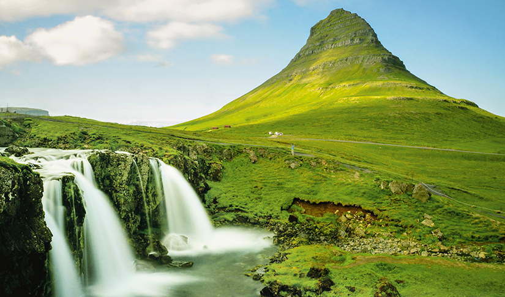

BAJO EL SOL DE MEDIANOCHE
Acogedoras comarcas, montañas espectaculares, islas frente a las costas y una tierra viva hacen del Norte de Islandia un mundo único. Al oeste los volcanes hace tiempo terminaron su cometido y desde la desaparición de los glaciares las corrientes fluviales han moldeado un paisaje de contornos suaves, atravesado por ríos salmoneros.
A ambos lados del fiordo de Eyjafjörður se elevan antiguas cadenas montañosas con valles arropados por formaciones más jóvenes, salvo al norte, donde las olas han formado vertiginosos acantilados. Ésta es la tierra soñada de los senderistas, donde el ocaso, en época de solsticio de verano, no tiene parangón, cuando el sol apenas besa el mar antes de elevarse de nuevo.
Más al este otras fuerzas intervienen: lavas recientes y fallas evidencian una tierra en creación; sólo han pasado dos décadas desde la última erupción en la zona de Krafla. Del choque de las fuerzas de la naturaleza también son testigos el paraje de Ásbyrgi y el impresionante cañón de Jökulsá á Fjöllum, donde un cataclismo de gigantescas riadas ha seccionado la tierra dejando a la vista lo más profundo del subsuelo. A poca distancia, otra perla natural: la comarca del lago Mývatn, famosa por su fauna aviar y belleza paisajística.
Durante siglos el hombre habitó las zonas bajas, viviendo de los frutos de la tierra y del mar. En los últimos tiempos las comarcas más dependientes de la pesca han sucumbido a las exigencias modernas de mayores comodidades, dándose un creciente despoblamiento. Éste es el caso de la costa este de Eyjafjörður, así como de grandes zonas de Melrakkaslétta y Langanes. Cada vez más, los turistas buscan la paz y tranquilidad de estos lugares, además de su peculiar naturaleza.


El Norte une la literatura medieval, la historia y la naturaleza. Húnavatnssýslur y Skagafjörður son el escenario de conocidas sagas islandesas. En las costas son fáciles de avistar las focas y el Selasetur, un museo sobre la foca, en Hvammstangi, es un lugar excelente para aprender más acerca de estos animales. Delante de la bocana de Eyjafjörður y por el golfo de Skjálfandi, se pueden observar manadas de ballenas. En Húsavík hay un museo dedicado a los cetáceos.
En Siglufjörður, otro recuerda una de las épocas de más auge económico de la nación, la «fiebre de la plata del mar»: las grandes capturas del arenque de la primera mitad del s. XX. Otro museo interesante es el Hafíssetur, en Blönduós, con una exposición sobre el hielo marino ártico, ese antiguo enemigo de Islandia.
El pequeño caballo islandés fue antaño el «servidor más útil» del hombre y en ningún lugar como en Skagafjörður se da su cría, aunque por todo el Norte se puede disfrutar de excursiones ecuestres de diferente duración. Además, la topografía de Skagafjörður, da la oportunidad de practicar el «rafting» en varios sitios. En Hofsós, en el «Vesturfarasetrið» –Museo de los Emigrantes a América–, se honra la memoria de los muchos islandeses que emigraron a Norteamérica en el s. XIX. La capital del Norte es Akureyri, ciudad universitaria y cultural, al fondo del Eyjafjörður; durante todo el verano ofrece una amplia programación cultural y artística.